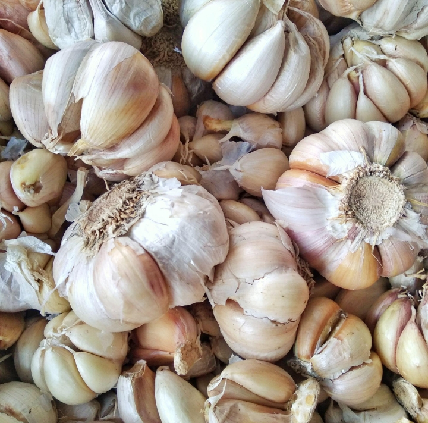
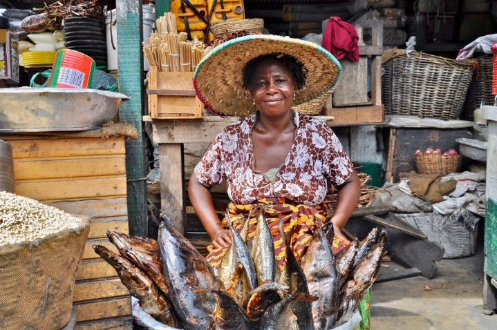

01
Fresh Ginger
Firm, aromatic ginger roots for kitchens, markets and food businesses.
Enquire About This Product ↗Five Prime Nigeria Limited is committed to connecting customers and businesses with quality agricultural produce and food products. We believe in dependable service, quality products and lasting business relationships.
Ginger · Red Pepper · Groundnuts · Garlic · Smoked Fish

At Five Prime Nigeria Limited, we recognise the importance of quality agricultural produce in everyday life and business. Our focus is on providing customers with access to agricultural products while building dependable relationships with individuals, retailers, wholesalers and other businesses.

Reaching us takes just a few taps.
Browse our range of agricultural produce.
Tap Enquire to open WhatsApp with your product selected.
Tell us what you are looking for.
We will respond to your enquiry directly.
Explore our range of agricultural produce and food products.
Firm, aromatic ginger roots for kitchens, markets and food businesses.
Enquire About This Product ↗Bright red peppers for everyday cooking, sauces and bulk supply.
Enquire About This Product ↗Wholesome groundnuts for snacking, processing and food preparation.
Enquire About This Product ↗
Whole garlic bulbs with a strong, fresh flavour for home and trade use.
Enquire About This Product ↗
Traditionally smoked fish, a staple for soups, stews and local dishes.
Enquire About This Product ↗Dependable service, quality products and lasting business relationships are at the heart of Five Prime Nigeria Limited.
Chat With Us ↗We care about the quality of every product we offer.
Clear, friendly communication from the first enquiry.
We value long-term relationships with our customers.
Dedicated to Nigeria’s agricultural produce market.

We believe in dependable service, quality products and lasting business relationships.Five Prime Nigeria Limited
Everything you may want to know before you enquire.
Tap any Enquire button to message us on WhatsApp, or call 0807 410 9054.
No. Please contact us for current product details and availability.
Fresh ginger, red pepper, groundnuts, garlic and smoked fish.
Onifade Bus-stop, 9 Abdullahi Close, Itele, Ota, Ogun State, Nigeria.
Tap any photo to enlarge it.
Whether you are a retailer, wholesaler or business looking for agricultural produce, Five Prime Nigeria Limited welcomes your enquiries.
Five Prime Nigeria Limited